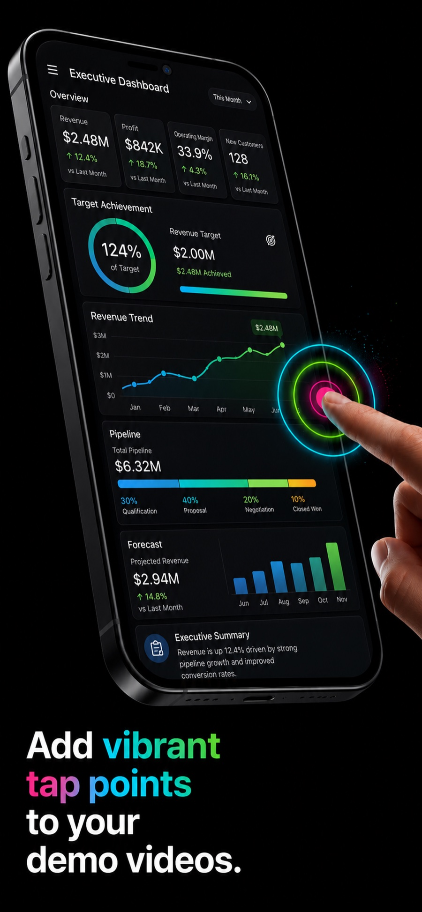
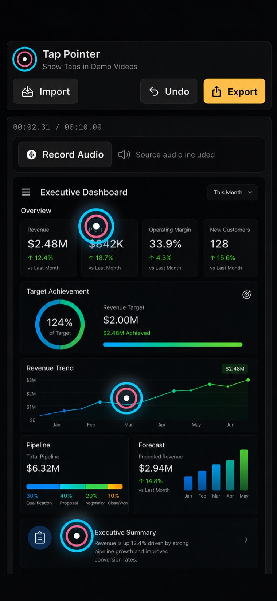
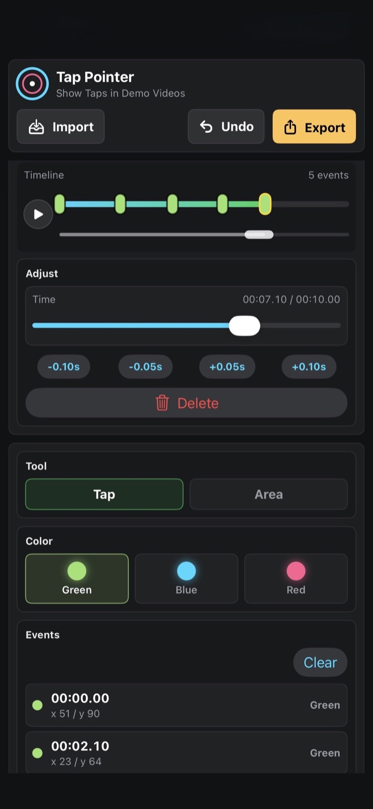
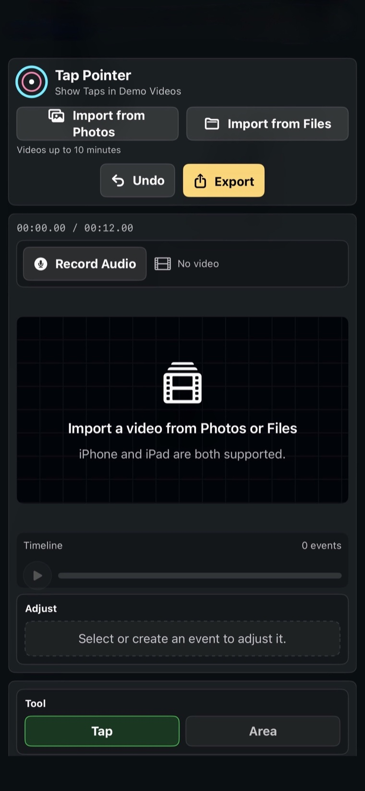

Tap effects and touch markers
Place clear tap points exactly where the viewer should look, with bright visual effects that stand out on dark or light app screens.

Tap effects for app demo videos
A clean demo video editor for adding visible tap effects, touch indicators, UI highlights, and voiceover to screen recordings.
Why it exists
Tap Pointer works with videos you already recorded. Import an app walkthrough, bug report, product demo, training clip, or support video, then add a visual presentation layer your viewers can follow.
Core features
Place clear tap points exactly where the viewer should look, with bright visual effects that stand out on dark or light app screens.
Highlight buttons, forms, charts, and UI regions with timed rectangles so important parts of a screen recording are not missed.
Keep the original sound or record narration after editing, then preview the result before exporting a polished video file.
Tap Pointer edits videos selected from your device. It does not draw over other apps, record in the background, or capture touches from other apps.
Workflow
Choose a video from Photos or Files on iPhone, or import an Android demo video on Google Play.
Use the timeline to place tap effects, touch indicators, and UI highlights at the moments that matter.
Review timing, add optional voiceover, then export a high-quality MP4 for customers, teammates, or support tickets.
Screenshots



Use Tap Pointer when a plain screen recording is not enough. It helps turn app demo videos, walkthroughs, onboarding clips, QA bug reports, training videos, and customer support recordings into clear visual explanations with tap effects, touch indicators, UI highlights, and voiceover.
FAQ
No. Record your app demo first using your device's screen recording tool, then import the video into Tap Pointer.
No. Tap Pointer does not capture touches from other apps. You manually add tap points and highlights after recording.
Editing and preview are free. High-quality MP4 export is available with a one-time Export Unlock purchase.